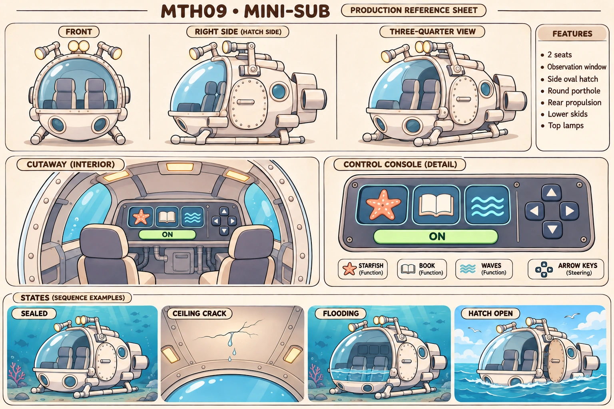
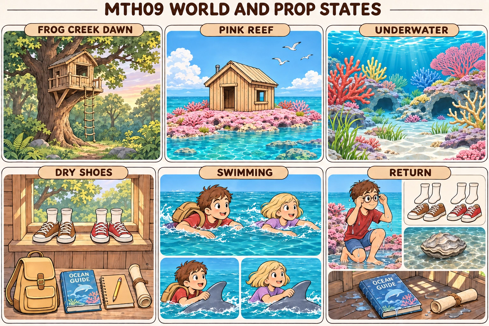

Chapter 3 · 이미지 일관성
원문과 아래 상태를 읽고 실제 시트를 확인한 뒤 scene ID별 계획을 기록하세요.
| 파트 | 장소 | 인물·복장 | 소품·전환 |
|---|---|---|---|
| 3 | 잠수정·수중 산호초 | 맨발, 안경 착용. | 별: 잠수 / 화살표: 조향. 인물 좌우는 카메라 방향과 함께 기록. |
인물 · 복장 기준

잠수정 구조 기준

공간 · 소품 상태 기준

원문과 아래 상태를 읽고 실제 시트를 확인한 뒤 scene ID별 계획을 기록하세요.
| 파트 | 장소 | 인물·복장 | 소품·전환 |
|---|---|---|---|
| 3 | 잠수정·수중 산호초 | 맨발, 안경 착용. | 별: 잠수 / 화살표: 조향. 인물 좌우는 카메라 방향과 함께 기록. |

